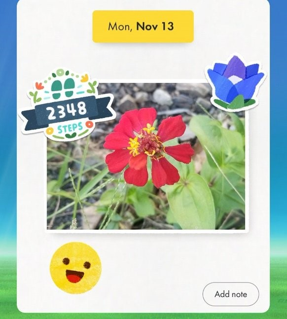

life update 27.nov.23
long time no..... see? at least in my journal page! this will be a bit disorganized but i just wanna write a bit about what i've been up to as of late!
i'm currently working on version 3 of my homepage! been learning A LOT about grids and even started to get the hang of it, which is what i'm using to make the homepage v3 layout :3 i'm super excited to get it done! but i'm taking my time with this one. so expect it sometime around the first half of december!
i've been making an effort as of late to be more active and spend less time on my computer just sitting around...
i've talked about walking + pikmin bloom previously here. but i stopped going on walks because i got sick with covid around august. and my god did i have a serious cough after 2 months of recovering from covid.  so yeah. for a bit i really just lost my motivation for walking.
so yeah. for a bit i really just lost my motivation for walking.
but! since i've been eating better lately so i thought "hey.... i should REALLY put in the effort into walking daily again..." so i have! the past few days i've been going on walks around my neighborhood that last for about an hour. i try to push myself a bit everyday. nothing i can't handle of course. but i've been enjoying it so far!
 and i've also picked up pikmin bloom again :) walking around the same places everyday can get quite... monotonous. but i really like that pikmin bloom helps me out with the walks not feeling as boring as they seem to be. i also use the app as a journal of sorts. i take pics of whatever i find interesting (enough) to take a pic of. i think it's super cute.
STILL Crazy Obsessed with fashion dreamer. i'm still playing it daily. and once i get sick of it, i'm planning on downloading a DS (and 3DS if there's any idk) emulator so i can play the style savvy games. i've heard A LOT of valid criticism towards fashion dreamer so i've very curious as to how the older games were. as someone who has never played them!
my plan of ditching spotify premium and figuring out other ways of listening to music has actually been somewhat successful. i say somewhat because i still use spotify quite a lot. at least on desktop since i recently learned that you will not get any ads if you open it on your desktop browser with an ad-blocker LMAO..... that's what you get for being annoying.
in other music news: my CD collection should be getting an update in the coming weeks!
i managed to find a copy of yeule's serotonin II on ebay! since i was the only one who bid on it (LOL) i got it for just $5  it was sealed and everything so i'm super happy i found that album at that price. it recently arrive too and the photos in the booklet are sooooo cool. i love yeule's work a lot. can't wait to be able to scan it.
it was sealed and everything so i'm super happy i found that album at that price. it recently arrive too and the photos in the booklet are sooooo cool. i love yeule's work a lot. can't wait to be able to scan it.
serotonin II jewel case alongside a stupid (lovingly) baby cat patch i bought for some overalls i have!
i have another album on the way as well, which i've talked about on a previous journal log here! owning my favorite albums physically is so cool. to be able to hold them and look at the artwork while listening to it. i love CDs. and i love owning the music that i love!!!!
anyway, i will now watch satoshi kon's tokyo godfathers while eating some ice cream. hope anyone reading this has a nice day!

 my fucking meow meows.... i love power and meowy a lot so AS MUCH AS I TRY to save the little money i have, i really but really needed this and boy... everytime i look at them i can't help but smile!
my fucking meow meows.... i love power and meowy a lot so AS MUCH AS I TRY to save the little money i have, i really but really needed this and boy... everytime i look at them i can't help but smile!